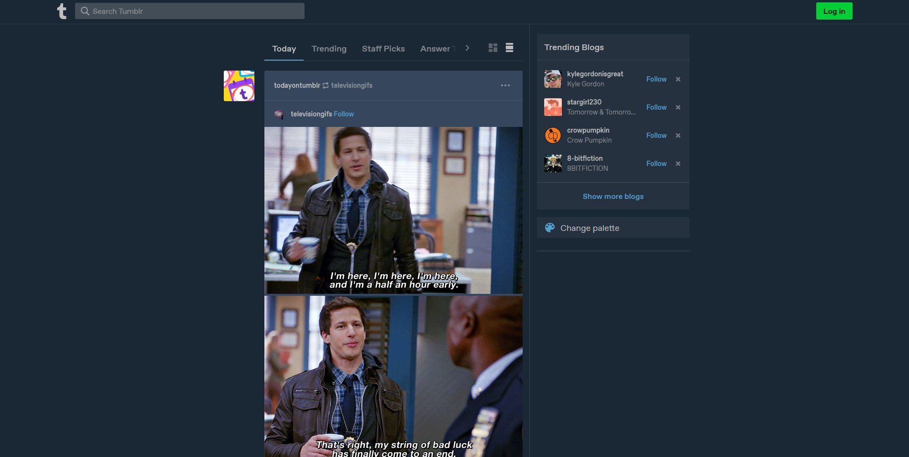
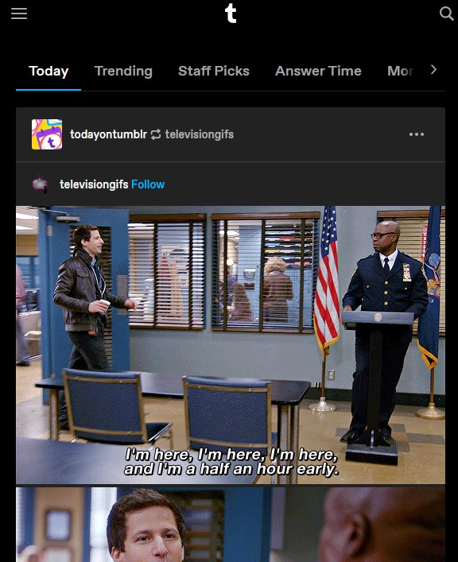

Earlier today, I was reading Presentation Zen: Simple Ideas on Presentation Design and Delivery, 2nd Edition by Garr Reynolds. While most of the design tips in this book referred to slideshow presentation design, the principles behind said tips were universal for any type of visual design. One principle that I thought would be interesting to write a post on was about negative space. Its evolution (or lack thereof, and even regression) within the Internet is a fascinating case study. In short, it is not merely screen area you 'forgot' to use, but purposefully empty for a variety of purposes: to prevent visual overstimulation, giving users' eyes a breather, and direct focus to certain areas of the screen. If I reworded the previous sentence slightly, I could apply that definition to other mediums too -- like books. Negative space in writing is more often called white space. In practice, it's the way writers indent their text blocks, break up their paragraphs, etc. You may have noticed as you've been reading this blog post -- or maybe struggling to read -- that I neglected to use my negative space well. I haven't once yet started a new paragraph; this one's getting quite a bit long and looks like an unappealing wall of text. I've also been trying to make it even less digestable by writing longer-than-usal sentences because those drag on and make it harder to comprehend what the sentence is trying to say. (Like that.) So... sorry! (But if it got the point across, not really.) At the very least, you have a little safe haven with the blog image forcibly introducing some negative space. And, look at that, right there you've just experienced the benefits of introducing negative space to a cluttered design.
So anyways, I wanted to analyze how a real website effectively uses negative space for their users' benefit. Enter left stage, tumblr.com. Here's what its main landing page looks like fullscreen on desktop.
Tumblr is a social media centered around blogging. A user's dashboard will show them all the posts from blogs they've followed. Theoretically, it should be an information overload (and therefore visual overload). But with effective use of negative space, it doesn't feel that way at all.
The design doesn't use a large portion of its screen real estate. Instead, the main body of content is nicely centered with no distractions in the peripheries. This makes sure users don't have to think about where their attention should be. Additionally, they can slowly ease themselves into more by scrolling down -- because that's what a lack of negative space there implies: more content. Veteran users of course have the power to toggle to multiple columns when they're ready to view more at once, but for newer users it's the training wheels they need.
So we can see what a tasteful appliance of negative space improves for a design. However, this effectiveness is diminished as the screen size diminishes...
Tumblr's mobile view (or even a smaller window size for the browser) just doesn't have the space for empty peripheries. There's still some negative space, but not enough to really help ease the eyes. It's why many users prefer desktop over mobile despite the convienience of portable access on a phone. But that's just food for thought and something to keep in mind. Even if you don't have a lot of space, always make space for negative space. The littlest bit can make a big impact.